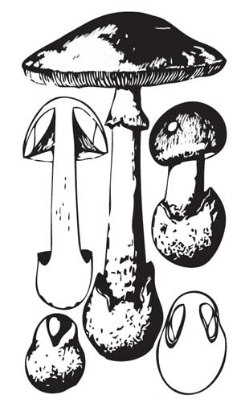
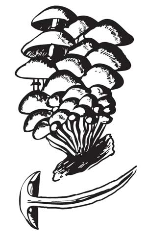
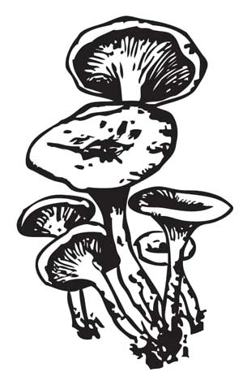

Ядовитые и несъедобные грибы
 Сатанинский гриб
Сатанинский гриб
Встречается сравнительно редко и необильно, преимущественно в южной части лесной зоны и на Кавказе. Для роста этому грибу необходимы известковая почва, а также тепло и деревья, с которыми он может образовать микоризу (бук, дуб, граб, реже – лещина, каштан, липа). Встречается с июля по сентябрь. Шляпка диаметром до 8 см подушковидная, выпуклая, грязносерая, в сырую погоду слизистая. Мякоть белая, на изломе сначала краснеет, потом синеет (в отличие от белого гриба). Ножка реповидная при основании, с красным сетчатым узором, у земли густокоричневого цвета, верх ножки оранжевый. Трубчатый слой красный, это и является основным отличием сатанинского гриба от съедобного боровика. Сатанинский гриб часто путают с синеющими грибами, у которых красный край трубочек, – поддубовиком крапчатым и оливковобурым, но у последних мякоть на месте излома сразу становится темносиней, а у сатанинского гриба она синеет медленно. Гриб ядовит. С древнейших времен его называют дьявольским грибом и лесным чертом. Даже кусочек сырой мякоти размером с ноготь, съеденный, чтобы попробовать (гриб, кстати, негорький), через некоторое время вызывает длительную рвоту и понос.
Бледная поганка
Растет в лиственных и смешанных лесах, обычно на хорошо освещенных местах. Встречается с июня до осенних заморозков, одиночно и группами.
Шляпка до 12 см в диаметре, сначала колокольчатая, затем плосковыпуклая, белая, зеленоватая или желтоватооливковая, в центре темнее, чем по краю, шелковистая, в сырую погоду слизистая, голая, иногда с белыми, быстро исчезающими хлопьями, с гладким краем. Мякоть белая, тонкая, сладковатая, с приятным запахом.
Пластинки свободные, частые, белые. Ножка до 12 см длины и до 2 см толщины, белая, желтоватая или чуть зеленоватая, ровная, гладкая или с мелкими хлопьевидными чешуйками, в основании имеет клубневидное утолщение, окруженное белым чашковидным влагалищем. В верхней части ножки есть широкое свисающее кольцо, белое, снаружи полосатое.

Бледная поганка, или мухомор зеленый.
Смертельно ядовит даже в очень небольших количествах! Для смертельного исхода достаточно четверти шляпки гриба. Признаки отравления появляются поздно, когда яд глубоко проник в организм, – через 8–12, а иногда и через 20–40 часов после принятия пищи. До 90% отравлений бледной поганкой кончаются смертью.
Неопытные грибники могут спутать бледную поганку с поплавками, которые отличаются от нее отсутствием кольца на ножке и полосаторубчатым краем шляпки. Белую разновидность бледной поганки можно принять за шампиньон, который отличается от нее отсутствием клубневидного утолщения у основания ножки и бледнорозовыми или темными пластинками.
Мухомор красный
Растет в лиственных, хвойных и смешанных лесах, особенно часто в березняках. Встречается часто и обильно, одиночно и большими группами с июня до ноября.
Шляпка до 20 см в диаметре, вначале шаровидная, затем выпукло– или плоскораспростертая, яркокрасная или оранжевокрасная. Поверхность усеяна крупными белыми или желтоватыми бородавками. Мякоть белая, под кожицей желтоватая, мягкая, без запаха.
Пластинки свободные, частые, широкие, белые или желтоватые. Ножка до 20 см длины и до 3 см толщины, цилиндрическая, у основания клубневидная, сросшаяся с влагалищем, вначале плотная, затем полая, белая или слегка желтоватая, голая с белым или желтоватым свисающим кольцом. Основание ножки покрыто белыми бородавками в несколько рядов. Гриб ядовит.
Ложноопенок
Распространен по всей лесной зоне. Грибы растут группами на гнилой древесине, на пнях и около них или у основания стволов с августа по октябрь. Шляпка молодого гриба колокольчатая, позже округлая, довольно мясистая, диаметром до 10 см. В центре красноватооранжевая, потом кирпичнокрасная, по краю иногда желтоватая. Поверхность гладкая, без чешуек. Пластинки частые, прикрепленные к ножке, у молодых грибов беловатые, позднее серожелтые или чернооливковые. Мякоть вначале белая, затем желтоватая, запах неприятный, вкус горький. Ножка длиной 5–10 см, толщиной 2–6 мм, ровная, к основанию суженная, вверху желтоватая, внизу коричневатая, волокнистая, у молодых грибов толстоватая, плотная, у старых – полая. Колечка на ножке нет.

Ложноопенок.
Гриб несъедобный, при попадании в организм человека может вызвать отравление.
Лисичка ложная
Растет по соседству с лисичкой настоящей в сосновых лесах, реже на гнилых сосновых бревнах, пнях и около них.
Шляпка округловоронкообразная с ровными краями, от красноватооранжевой до красномедной окраски. Пластинки яркокрасные, толстые, прямые, сбегающие по ножке.
Ножка тонкая, цилиндрическая, полая, такого же красноватооранжевого цвета, как и шляпка, мякоть желтая, мягкая. К старости гриб часто чернеет снизу. Гриб несъедобный.

Лисичка ложная.